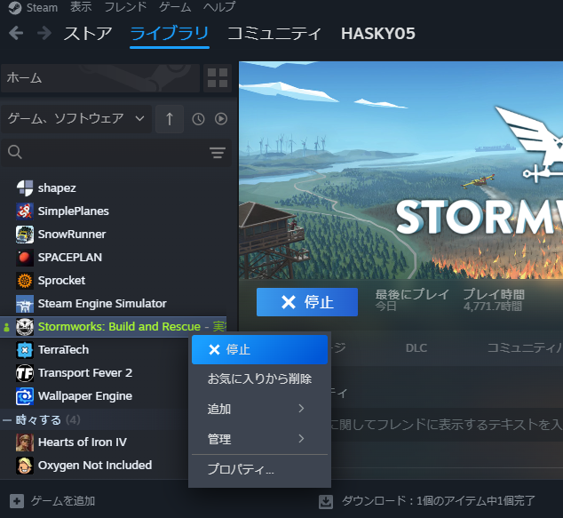
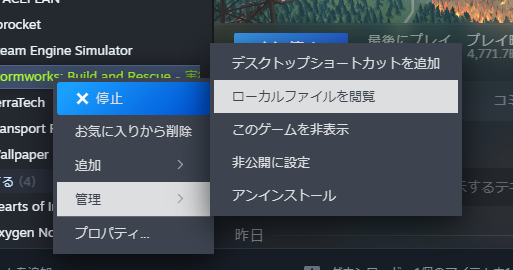
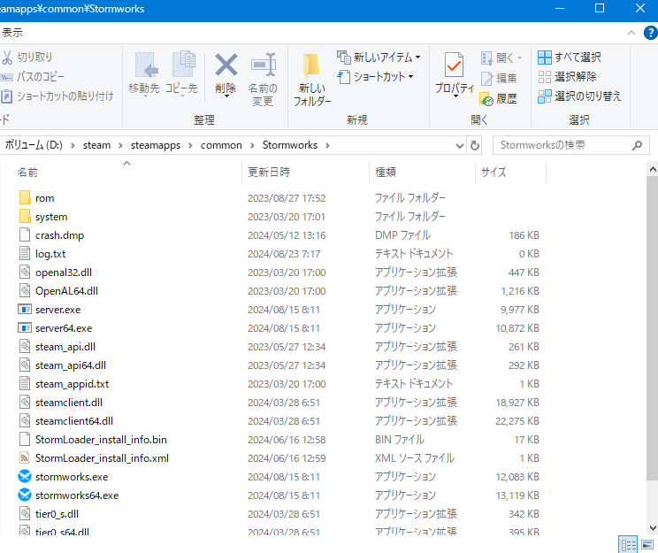
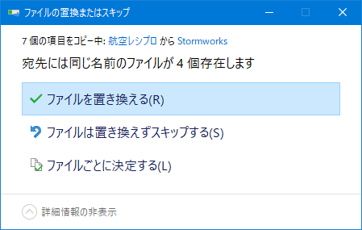

航空レシプロ音MOD
導入方法
①SteamのライブラリタブにあるStormworksのこれを右クリック
②管理→ローカルファイルを閲覧
③出てきたフォルダーにダウンロードしたファイルの"rom"を追加
するとこんな感じのウィンドウが出てくるので"ファイルを置き換える(R)"
ここまでの手順が完了したら、stormworksを起動して音声が描き変わっているか確認してください。
もし書き変わっていなかったら、ここまでの手順を見返すかTwitterかなんかで私に相談すると何とかなる…かも？